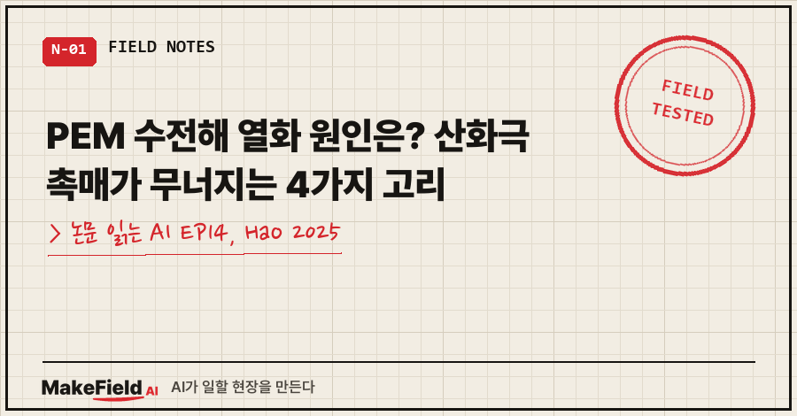
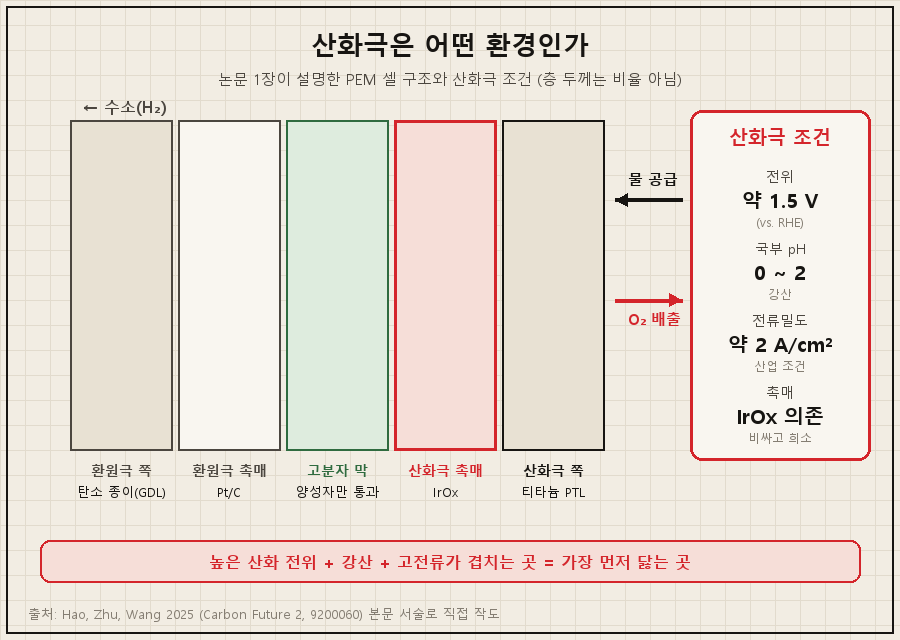
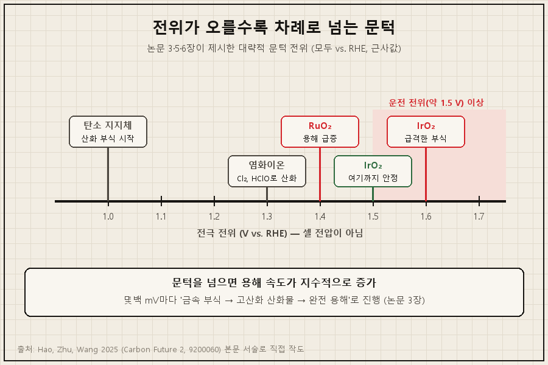
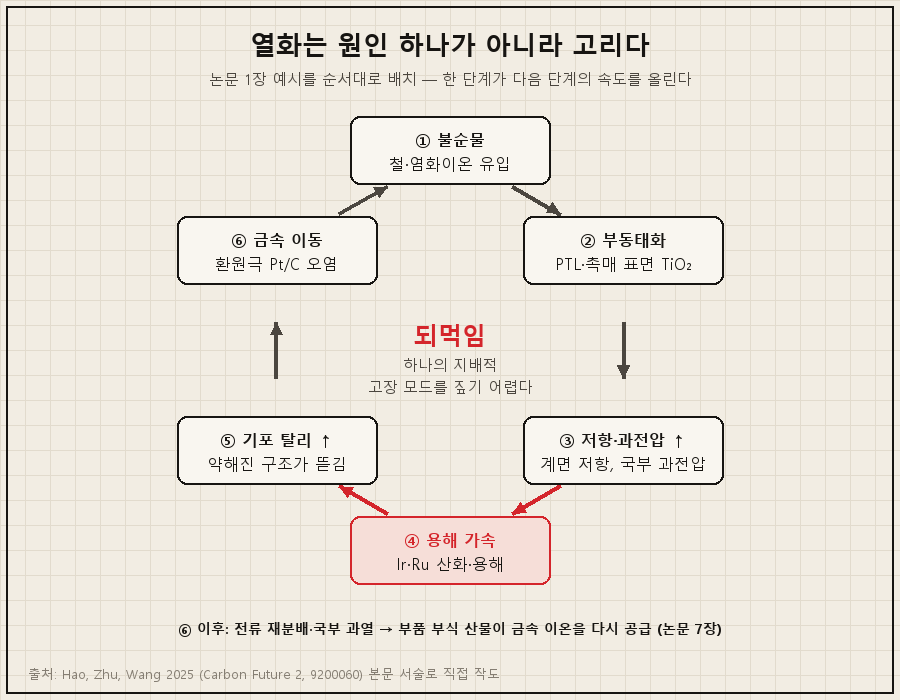
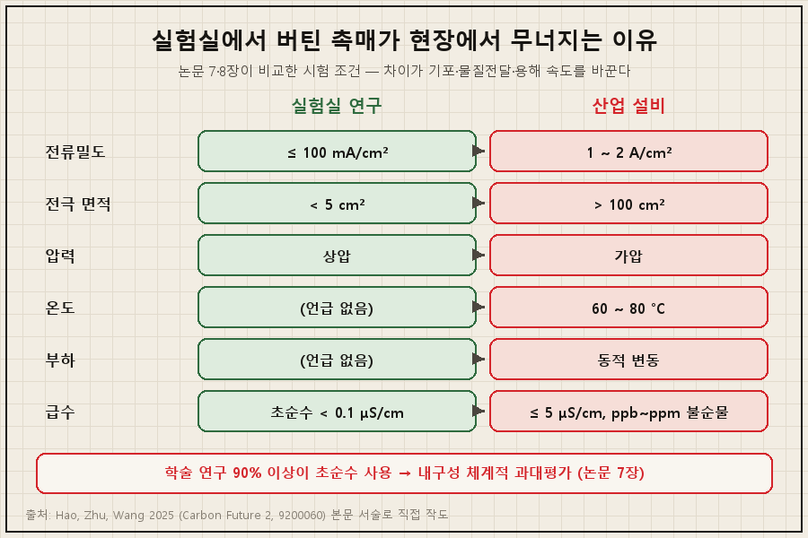
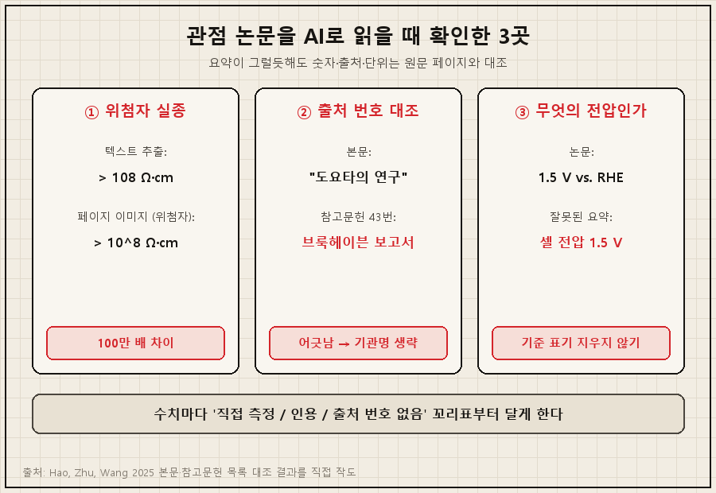

PEM 수전해 열화 원인을 한 부품에서 찾으라면 답은 산화극(산소가 나오는 쪽 전극)의 촉매입니다. 그런데 범인은 하나가 아니에요. 2025년 라이스대 연구진은 PEM 수전해 산화극 촉매가 녹고, 기포에 뜯겨 나가고, 불순물에 오염되고, 티타늄 다공층이 절연막으로 덮이는 일이 서로를 키우는 고리로 묶여 있어서, 촉매 재료만 바꿔서는 효과가 제한적이라고 정리했어요 [Hao 2025, Abstract·1장].
'논문 읽는 AI' 14편이자 4부 '닳는 것'의 첫 글입니다. 지난 3부가 "왜 터지나"였다면, 이번엔 스택이 늙는다는 게 정확히 어디서 무슨 일이 일어나는 건지 봅니다.
읽은 논문은 미국 라이스대 Shaoyun Hao·Peng Zhu·Haotian Wang이 학술지 Carbon Future(2025, 2권)에 낸 「Failure mechanisms in PEM water electrolyzers」예요. 새 실험 논문이 아니라 관점 논문(Perspective), 즉 기존 연구를 엮어 문제를 다시 정의하는 글입니다 [Hao 2025, 1장].
1. 산화극은 어떤 환경이길래 가장 먼저 닳나요
PEM 산화극은 기준전극 대비 약 1.5 V의 높은 산화 전위와 pH 0~2의 강산이 겹치는 곳이라, 이 조건을 버티는 상용 촉매는 사실상 이리듐 산화물(IrOx)뿐이라고 논문은 설명해요 [Hao 2025, 1장]. 산업에서 쓰는 전류밀도(약 2 A/cm²)에서 이 조건은 더 가혹해집니다.
용어부터 풀어 둘게요.
- PEM 수전해: 고분자 막(양성자만 통과시키는 얇은 막)을 사이에 두고 물을 수소와 산소로 나누는 장치
- 산화극(anode): 물이 쪼개지며 산소가 나오는 쪽. 이 반응을 산소 발생 반응(OER)이라고 부름
- PTL(다공성 수송층): 산화극 촉매 바깥에 붙은 티타늄 다공판. 물을 들여보내고 산소를 내보내며 전기를 전달
논문이 그린 셀 구조는 이렇습니다. 촉매를 막에 직접 바르고, 수소가 나오는 환원극 쪽엔 탄소 종이, 산화극 쪽엔 티타늄 PTL을 대요. 그리고 탈이온수를 산화극으로 넣습니다 [Hao 2025, 1장].

산소 발생 반응은 전자 4개가 오가는 느린 반응이라 높은 과전압(반응을 밀어붙이는 데 드는 추가 전압)이 필요해요 [Hao 2025, 1장]. 이리듐은 비싸고 희소한데, 지금까지 연구는 대부분 고장 원인을 루테늄·이리듐 산화물의 용해로 보고 촉매 개선에 집중해 왔다고 해요 [Hao 2025, 1장]. 이 논문의 문제 제기가 바로 여기서 출발합니다.
2. 무엇이 촉매를 망가뜨리나요 — 네 가지 고리
논문은 탈이온수가 들어오는 산화극에서 성능을 깎는 요인을 이렇게 나열해요 [Hao 2025, 1장]. 산·산화 조건에서의 촉매 용해, 산소 기포에 의한 탈리, 물 흐름에 의한 씻김, PTL 부동태화, 염화이온 같은 불순물 오염, 녹은 이리듐·루테늄이 환원극으로 넘어가 백금을 오염시키는 것입니다. 이 글에서는 커리큘럼 핵심인 네 고리로 묶어 볼게요.
| 고리 | 무슨 일이 | 논문이 든 수치 |
|---|---|---|
| ① 용해 | 고전위에서 촉매가 고산화 상태로 바뀌어 녹아 나감 | IrO₂는 약 1.5 V까지 안정, 약 1.6 V 위에서 급격히 부식 [Hao 2025, 3장] |
| ② 기포 탈리 | 산소 기포가 자라고 떨어지며 촉매 입자를 뜯어냄 | 국부 전단응력 10⁴~10⁵ Pa [Hao 2025, 4장] |
| ③ 불순물 오염 | ppm 수준 이온이 활성점을 막거나 부식을 촉진 | Cl⁻ 10 ppm에 Ir 용해 속도 5배 [Hao 2025, 5장] |
| ④ PTL 부동태화 | 티타늄 표면에 절연성 TiO₂ 막이 생김 | 약 10 nm 막에 추가 과전압 약 200 mV [Hao 2025, 6장] |
① 용해 — 문턱 전위를 넘으면 지수적으로. pH 2 미만, 1.5 V 이상에서 이리듐·루테늄 산화물은 +5~+6가의 불안정한 상태로 밀려 녹아 나가요. 루테늄은 약 1.4 V 근처부터 용해 속도가 급증하고, 이리듐은 약 1.5 V까지 버티다 약 1.6 V 위에서 빠르게 부식됩니다. 문턱을 넘으면 몇백 mV마다 용해 속도가 지수적으로 오른다고 적었어요 [Hao 2025, 3장].
반응 경로도 영향을 줍니다. 산소 원자를 촉매 격자에서 빌려 오는 격자산소 경로(LOM)는 격자에 빈자리를 남겨 구조를 흔들고, 녹기 쉬운 고산화 이리듐을 드러낸다고 해요 [Hao 2025, 2장].

② 기포 탈리 — 산소 기포는 부산물이 아니라 가해자. 촉매 위에서 자라는 마이크로미터 크기 기포가 10⁴~10⁵ Pa의 국부 전단응력을 만들어 나노 입자를 막에서 떼어 내요. 기포가 떨어질 때는 초속 약 1 m의 미세 제트가 생겨 '나노 규모 수압 파쇄'처럼 입자를 비틀어 뽑는다고 표현했습니다 [Hao 2025, 4장]. 용해가 촉매와 지지체 사이를 파먹어 결합력을 50% 넘게 떨어뜨리면 이 손상이 더 커지고요 [Hao 2025, 4장].
③ 불순물 — ppm이 조용한 파괴자. 급수 속 염화이온·이산화황·칼슘·마그네슘, 장치 부식에서 나온 철·구리 이온이 원인이에요 [Hao 2025, 5장]. 1.3 V 위에서 염화이온은 염소나 차아염소산으로 바뀌어 촉매 계면을 공격하고, 철·구리 이온은 활성점에 붙었다가 절연성 산화물(Fe₂O₃ 등)로 표면을 덮습니다. 칼슘·마그네슘은 인산염과 만나 전극 기공 안에 스케일을 쌓고요 [Hao 2025, 5장].
④ PTL 부동태화 — 절연막이 전류를 가장자리로 몬다. 티타늄은 부식에는 강하지만 높은 전위에서 표면에 비저항 10⁸ Ω·cm가 넘는 TiO₂ 막이 생겨요. 약 10 nm 두께만으로 계면 임피던스가 100배 넘게 오르고 약 200 mV의 과전압이 더 붙습니다. 더 나쁜 건 전류가 막이 덜 생긴 가장자리로 몰리면서 그곳이 먼저 녹는 '가장자리 식각'이 시작되고, 결국 가운데 영역까지 전자 공급이 끊겨 촉매층이 기능을 잃는다는 점이에요 [Hao 2025, 6장].
3. 왜 '사슬'이라고 하나요 — 서로를 키우는 되먹임
네 고리는 따로 일어나는 게 아니라, 한 고리가 다음 고리의 속도를 올리는 되먹임 구조라서 하나의 지배적 고장 모드를 짚어 내기 어렵다는 게 이 논문의 핵심 주장이에요 [Hao 2025, 1장].
논문이 직접 든 예시를 순서대로 따라가 보면 이렇습니다 [Hao 2025, 1장].
- 철·염화이온 같은 불순물이 티타늄 PTL이나 촉매 표면을 부동태화한다
- 계면 저항과 국부 과전압이 오른다
- 이리듐·루테늄의 산화와 용해가 빨라진다
- 구조가 약해져 기포에 의한 탈리가 커진다
- 녹은 금속이 환원극으로 넘어가 Pt/C 표면에 다시 쌓여, 막힘과 전류 재분배를 일으킨다

기포 쪽에도 작은 고리가 하나 더 있어요. 새로 드러난 표면이 빠르게 녹고, 그 자리가 새 기포의 핵이 되고, 입자 손실이 과전압을 올리고, 과전압이 다시 기포 활동을 키우는 '박리-부식 되먹임'이 촉매층이 무너질 때까지 이어진다고 적었습니다 [Hao 2025, 4장].
이 고리는 막까지 번집니다. 환원극 쪽으로 넘어간 산소가 과산화수소와 라디칼을 만들어 고분자 막 사슬을 끊고, 금속 이온은 이 라디칼 생성을 촉진해요. 막이 얇아지면 구멍과 가스 크로스오버로 이어지고, 이는 불소 이온 배출량(FRR) 증가로 추적합니다 [Hao 2025, 5장]. 스택 차원에선 PTL·분리판의 부식 산물이 금속 이온을 다시 공급해 되먹임을 유지시킨다고 했어요 [Hao 2025, 7장].
그래서 고장 직전 신호도 여러 곳에서 나옵니다 [Hao 2025, 7장].
| 신호 | 가리키는 것 |
|---|---|
| 개회로전압(OCV) 감쇠 이상, 배압 흔들림, 산소 속 수소 증가 | 막 균열·얇아짐에 의한 가스 크로스오버 |
| 불소 이온 배출량(FRR) 증가 | 막 분해 진행 |
| 전기화학 임피던스(EIS)로 본 전하전달 저항 증가 | 계면 열화 |
| 배출수 속 금속·할로겐 검출(ICP-MS) | 촉매·부품 용해, 불순물 축적 |
4. 촉매만 바꾸면 안 되나요 — 결론과 한계
논문의 결론은 기존 루테늄·이리듐 촉매의 내구성 한계가 포화에 가까워졌지만, 새 재료만으로는 부족하고 촉매·막·급수·PTL의 상호작용을 함께 봐야 한다는 것이에요 [Hao 2025, 1장·8장].
근거로 든 게 시험 조건의 차이입니다. 학술 연구의 90% 이상이 0.1 μS/cm 미만 초순수를 쓰지만, 산업 설비 급수는 5 μS/cm 이하에 ppb~ppm 불순물이 들어 있어 내구성이 체계적으로 과대평가된다고 지적했어요 [Hao 2025, 7장].

| 항목 | 실험실 연구에서 흔한 조건 | 산업 설비 운전 조건 |
|---|---|---|
| 전류밀도 | 100 mA/cm² 이하 | 1~2 A/cm² |
| 전극 면적 | 5 cm² 미만 | 100 cm² 초과 |
| 압력 | 상압 | 가압 |
| 온도 | (논문 언급 없음) | 60~80 °C |
| 부하 | (논문 언급 없음) | 동적 부하 변동 |
| 급수 | 0.1 μS/cm 미만 초순수 | 5 μS/cm 이하, ppb~ppm 불순물 |
출처: 전류밀도·면적·압력·온도·부하 [Hao 2025, 8장], 급수 [Hao 2025, 7장]
이 차이가 물질 전달·기포 거동·용해 속도를 바꿔 안정성 추세를 완전히 다르게 만든다고 해요 [Hao 2025, 8장]. 그래서 논문은 세 방향을 제안합니다 [Hao 2025, 8장].
- 시험: 막-전극 접합체(MEA)에 넣은 상태로, 고전류·과도 운전에서 촉매를 비교. 가속열화시험엔 기동·정지와 부하 변동, 철·염화이온 투입, 10,000시간 내구 목표를 넣은 통일 기준 필요
- 재료: 전도 담당(Ir·Ru), 구조 안정 담당(Ti·Zr), 자기 보호막 담당(Cr)처럼 원소별 역할을 정한 고엔트로피 산화물. 비귀금속 촉매는 산성 안정성이 10~100배는 올라야 함
- 진단: 셀에 창을 낸 실시간 분석(방사광 X선·라만·DEMS)과 전기화학-기계-수송 모델 결합
이 논문의 한계도 짚어 둘게요.
- 새 실험이 없다: 관점 논문이라 수치 대부분이 인용이에요. 예컨대 "Cl⁻ 10 ppm에 Ir 용해 5배"는 "산업 데이터에 따르면"이라고만 적고 해당 문장에 참고문헌 번호가 없습니다 [Hao 2025, 5장].
- 되먹임은 정성적이다: 고리끼리 얼마나 서로를 키우는지 계수로 제시하진 않아요. 저자들 스스로 "같은 운전 조건에서 모든 고장 경로를 분리·정량한 통일 데이터셋이 아직 없다"고 밝혔습니다 [Hao 2025, 8장].
- 인용 표기 하나가 어긋난다: 탄소 지지 Ru/IrO₂ 산화극이 1.8 A/cm²에서 200시간 만에 활성 면적을 최대 40% 잃는다는 결과를 본문은 "도요타의 연구"라고 소개하는데, 붙은 43번 참고문헌은 미국 브룩헤이븐 국립연구소 보고서(2015)로 적혀 있어요 [Hao 2025, 6장·참고문헌 43]. 이 논문만으로는 어느 쪽이 맞는지 확인할 수 없어 이 글에선 기관명을 빼고 옮겼습니다.
5. AI 요약에서 그대로 믿으면 안 됐던 숫자 세 개
관점 논문은 문장이 매끄럽고 확신에 차 있어서, AI 요약이 "측정된 사실"과 "저자의 해석·인용"을 한 덩어리로 섞기 쉬워요. 이번엔 세 군데를 원문과 대조했습니다.

① 위첨자가 사라진 숫자. PDF를 텍스트로 뽑아 AI에게 넘기면 지수가 평범한 숫자로 내려앉아요.
[텍스트 추출] TiO2 layer, resistivity > 108 Ω·cm
[텍스트 추출] local shear stresses reaching 104–105 Pa
[페이지 이미지] > 10⁸ Ω·cm / 10⁴–10⁵ Pa"108 Ω·cm"를 그대로 믿으면 100만 배가 틀립니다. 그래서 단위 앞 숫자가 10으로 시작하면 해당 쪽을 이미지로 열어 지수인지 확인하라고 따로 지시했어요.
② 본문의 기관명과 참고문헌 번호. "도요타 연구에 따르면 200시간에 40%"라는 문장은 요약에 그대로 살아남습니다. 43번을 목록에서 직접 찾아 대조해야 어긋남이 보여요. 2단 편집 논문은 텍스트 추출 시 번호가 항목 뒤에 붙어 나오기도 해서, 번호와 항목 짝도 페이지 이미지로 맞췄습니다.
③ '1.5 V'가 무엇의 전압인지. 논문의 1.5 V·1.6 V는 모두 기준전극(RHE) 대비 전극 전위예요 [Hao 2025, 1·3장]. "셀 전압 1.5 V에서 이리듐이 녹는다"로 요약되면 다른 물리량이 됩니다. 단위 뒤의 "vs. RHE"를 지우지 말라고 지시해 두는 게 안전해요.
여러분 분야의 리뷰·관점 논문을 AI로 읽을 때 그대로 붙여 쓸 수 있는 질문입니다.
1) 본문 수치마다 '이 논문이 직접 측정 / 참고문헌 인용 / 출처 번호 없음' 중 하나로 표시해.
2) 출처 번호가 붙은 수치는 참고문헌 목록에서 그 번호 항목을 찾아, 본문이 말한 기관·저자와 맞는지 대조해.
3) 10으로 시작하는 숫자 뒤에 단위가 오면 위첨자 지수일 수 있으니, 해당 쪽 이미지를 보고 확인해.
4) 전압·농도 수치는 기준(vs. RHE, ppm 기준 매질 등)을 지우지 말고 함께 옮겨.
5) "A가 B를 가속한다" 같은 인과 문장은 정량 근거가 있는지 없는지 따로 표시해.6. 자주 묻는 질문
Q. PEM 수전해 열화 원인 중 가장 큰 건 무엇인가요?
이 논문은 하나를 꼽지 않아요. 촉매 용해, 기포 탈리, 불순물 오염, PTL 부동태화가 서로를 키우는 되먹임이라 하나의 지배적 고장 모드를 찾기 어렵다고 했습니다 [Hao 2025, 1장]. 기존 연구가 주목해 온 건 이리듐·루테늄 산화물의 용해였어요.
Q. 왜 PEM 산화극엔 비싼 이리듐을 쓰나요?
산화극이 기준전극 대비 약 1.5 V, 국부 pH 0~2라는 가혹한 조건이라 이를 버티는 상용 촉매가 사실상 이리듐 산화물뿐이기 때문이라고 설명해요 [Hao 2025, 1장]. 비귀금속 촉매는 산성 안정성이 10~100배는 개선돼야 한다고 봤습니다 [Hao 2025, 8장].
Q. 급수 품질이 수명에 그렇게 큰 영향을 주나요?
논문은 ppm 수준 불순물도 산화극에서 심각한 손상을 줄 수 있다고 했고, 염화이온 10 ppm에 이리듐 용해가 5배 빨라진다는 산업 데이터를 소개했어요 [Hao 2025, 5장]. 다만 이 수치엔 참고문헌 번호가 붙어 있지 않습니다.
한 줄로 줄이면, PEM 수전해 열화 원인은 "이리듐이 녹는다" 한 줄로 끝나지 않습니다. 녹고, 뜯기고, 오염되고, 절연막에 덮이는 일이 서로의 속도를 올리는 사슬이라서, 논문은 촉매 하나가 아니라 촉매·막·급수·PTL을 함께 보고, 실제 운전에 가까운 조건으로 시험하라고 결론 내립니다.
다음 편에서는 같은 스택도 태양광처럼 출력이 오르내리는 운전에서 더 빨리 늙는다는 실험을, µV/h라는 열화 단위와 함께 읽어 볼게요.
여러분이 읽은 리뷰 논문에도 본문이 말한 출처와 참고문헌이 어긋난 곳이 있었나요?
리뷰 논문을 AI로 읽을 때 쓰는 원문 대조 체크리스트는 makefield.ai에 정리해 두고 있어요.